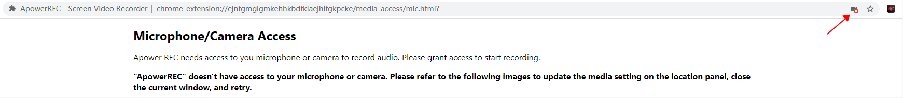
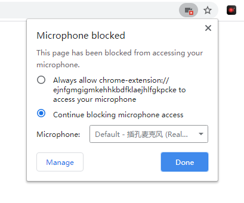

Nimbus needs access to you microphone or camera to record audio. Please grant access to start recording.
Nimbus failed to access to your microphone or camera. Please change the media setting in the location bar. Then close this tab and try again.
 